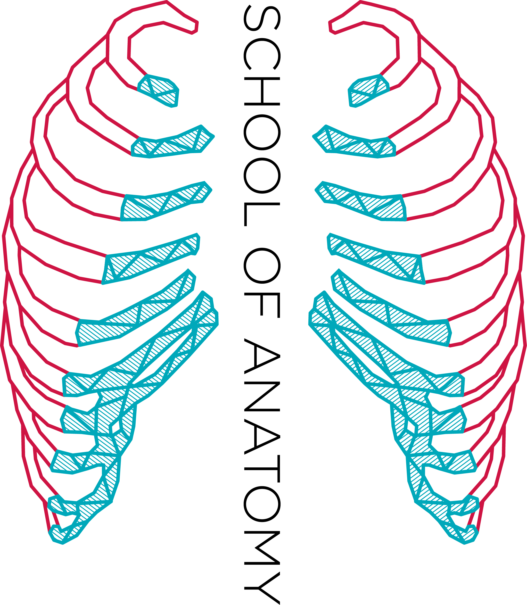

⊹
Select a region to begin
Choose a model from the list on the left.
Loading model…
Drag to rotate
·
Scroll to zoom
·
Right-drag to pan
New label

School of Anatomy | University of Waterloo
Settings
Display
Accessibility
Performance
Select a region to begin
Choose a model from the list on the left.
Loading model…
New label